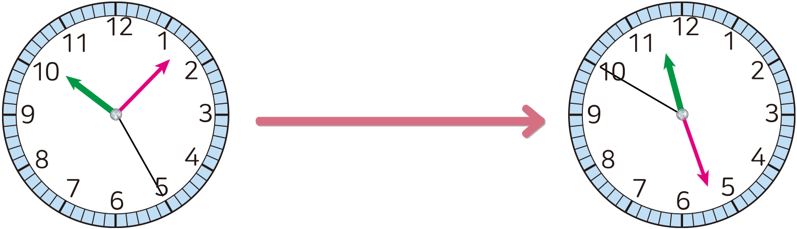
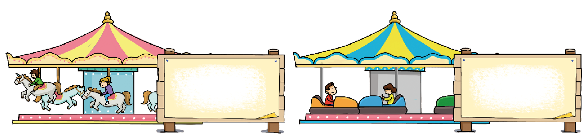

- 개념 정리
- 1
- 2
- 3
- 4
- 5
- 6
-
-
시간의 차는 시는 시끼리, 분은 분끼리, 초는 초끼리 뺍니다.
8 시 30 분 20 초 － 5 시 15 분 15 초 3 시 15 분 5 초 -
-
1 안에 알맞은 수를 써넣으세오.
5 시간 25 분 20 초 － 3 시간 10 분 16 초 2시간 15분 4초 6시 45분 20초－1시간 5분 17초＝시간5분40초3 -
2 은하가 미술관에 가서 관람을 시작한 시각과 끝낸 시각입니다. 은하가 미술관에서 관람을 하는 데 걸린 시간을 구해 보세요.
관람을 시작한 시각관람을 끝낸 시각11 시 26 분 50 초 － 10 7 분 25 초 1시 19분 25초 -
3 우주가 집에서 공원까지 가는 데는 25분이 걸렸습니다. 우주가 공원에 도착한시각이 9시 10분이었다면 집에서 출발한 시각을 구해 보세요.
9 시 10 분 － 25 분 8시 45분 -
4 어느 놀이공원에 있는 놀이 기구의 1회 운행 시간은 다음과 같습니다. 회전목마가 범퍼카보다 얼마나 더 오래 운행하는지 구해 보세요.
회전목마
3분 30초범퍼카
2분 15초분1초15 -
5 샛별이가 85초 동안 리코더를 연주했습니다. 샛별이가 연주를 끝낸 시각이 10시17분 45초였다면 연주를 시작한 시각을 구해 보세요.
10시 16분 20초 -
6 두 영화 중 어느 영화의 상영 시간이 얼마나 더 긴지 구해 보세요.
영화 제목 영화가 시작한 시각 영화가 끝난 시각 모험가 13:25 15:27 고양이 14:07 06:20 가고양이분 더 깁니다.11